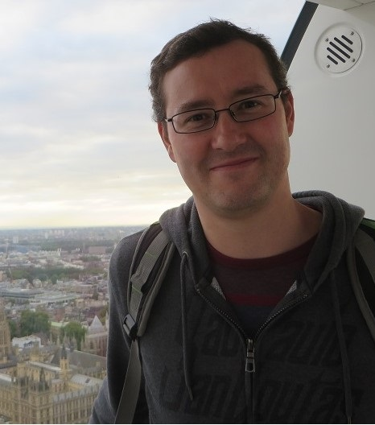

Simon Mckindley
Student Number: S9406133
Email: S9406133@student.rmit.edu.au
I grew up in Heywood, as small country town in western Victoria and graduated High School in 1993. It was a great place to grow up because we had all the fresh air and open space and we were given the freedom to explore. I moved to Melbourne after high school and now live in the western suburbs of Melbourne with my wife and kids aged 2 and 4 years, who are all fantastic.
I currently work full time with Australia Post, and have done since 2002 in various rolls in the retail area.
An interesting fact concerning my family is that I have two brothers and my wife has one sister, and all of us have two children each and we all have an older girl and younger boy. Statistically I would think that this would be improbable.
I first became interested in IT when my parents bought a computer for me to do my high school work. I remember it had the latest Intel 486 processor and both 5.25in and 3.5in floppy drives. I had to figure out DOS to use it (it came with a paper manual) and I mostly used it for games, which I had to mail order, or writing little Pascal programs with my friends. After high school I was accepted into the Bachelor of IT course at RMIT Bundoora, which I now realise was a great opportunity for me. However, as an 18-year-old at the time I didn’t enjoy university life and decided to move on to other things after a few months. Since then I have gone back to study IT two more times. The first time I studied programming at a private training institute, mainly learning C++. But after the initial course I was told by others in the IT industry that there were “no jobs in Australia for programmers”, so because I already had a well-paying job I decided not to continue. A few years later I decided to do a network administrator course also through a private training institute and ended up getting an A+ and the Microsoft Certified System Administrator certifications. However, all the entry positions I could use these qualifications to apply for at the time were quiet low paying compared to the position I held at the time, so again I decided not to pursue it. I chose to enrol at RMIT because of their reputation as a top-quality technical university. I have known other people who have studied at different campuses and were well supported. Also, I feel that IT employers may value an RMIT graduate over others. I expect that through RMIT I will learn about the latest and emerging trends in IT, which will bring my IT knowledge up-to-date and make me more employable in the field. I also hope to meet knowledgeable people who I can learn from.